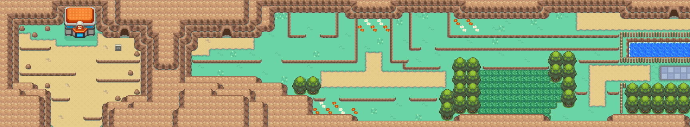
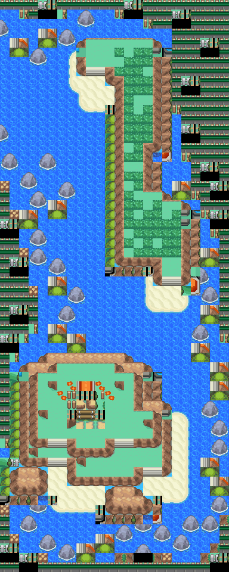

蔓莓果
研磨成粉后用做 制药的原材料。
获取：漩涡岛(31,25) ／ 4号公路(67,17) ／ 37号道路(15,7) ／ 满金市(67,17)
用途
研磨成粉后用做 制药的原材料。
标价 500 口袋：树果袋
获取方式
地面隐藏
- 漩涡岛（区域176） · (31,25) · 数量 1 · 地图｜静态图
- 4号公路（区域104） · (67,17) · 数量 1 · 地图｜静态图
- 37号道路（区域162） · (15,7) · 数量 1 · 地图｜静态图
- 满金市（区域147） · (67,17) · 数量 1 · 地图｜静态图


数据来源
- 来源文档：out/items.json（
/148） - 表索引 index 0148；内嵌 itemId 148；口袋 BERRY_POUCH (id=5)；type 4；hold_effect 0/0；importance 0；unk19 16
- 获取来源文档：maps_research/out/events/events.json
- 获取记录 ID：
hidden:1:109:2、hidden:3:22:4、hidden:3:57:2、hidden:3:76:4 - 说明文字解码来源：
reference/SAVE_HOME_GAME_DATA.json.charmap
地点地图
共享RGB底图；点击可缩放定位。数字对应本页相关地点，不代表地图上全部事件。
漩涡岛

1 蔓莓果（31,25）
4号公路

1 蔓莓果（67,17）
37号道路 · 五之岛旧布局

1 蔓莓果（15,7）
本图保留原FiveIsland_MemorialPillar布局，当前图块资源与旧布局不匹配；地区段名称被改为37号道路，不能将它当作当前城都37号道路。
满金市·商业区


地图范围记录：当前资料没有精确人物／遭遇坐标。 底图有1个图块缺少原始数据。